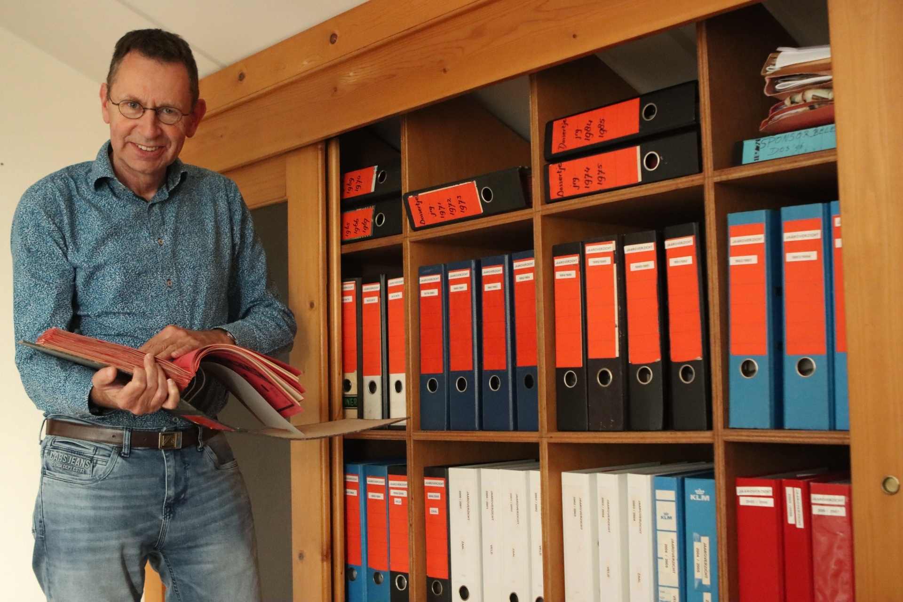

RIJKE HISTORIE
We hebben als vereniging een rijke historie van 75 jaar met prachtige herinneringen en het is goed
om daar bij stil te staan. Vanaf de oprichting op 22 mei 1946 tot het eerste landskampioenschap met
de jeugd in 1971 tot de gouden periode 2005-2010. Verhalen zijn er om te vertellen. Een mooi moment
om eens terug te kijken en in gesprek te gaan met (oud) spelers en een duik te nemen in ons prachtige
archief. Een archief die nog lang niet vol zit en zit te wachten op nog vele nieuwe hoofdstukken.
“VERHALEN
VAN DE CLUB
MOGEN NIET
VERLOREN
GAAN”

‘Kom, dan neem ik je mee het archief in.’ Nico Buiten opent de deur van de kamer en schuift de kast open.
Op de planken onder elkaar een rits aan ordners en mappen, gevuld met oude Dossertjes en jaaroverzichten. Prestaties van de selectie, notulen van commissies, jubileumactiviteiten..
Ook de dozen op de grond zijn gevuld met een deel van
het clubverleden. Veel foto’s en negatieven. Ze moeten nog
een plekje krijgen, maar ze zijn er nog, daar gaat het om.
Nico: ‘Kijk, de tekst van het cabaretprogramma Langs de
Lijn DOS’46 65 jaar. Dat was leuk, hè? De eerste foto van
het eerste team, de eerste brief van initiatiefnemer A.P.
Buiten, ze zijn er nog.
Vijf jaar geleden nam Nico het archief over van oud-voorzitter George Claasz Coockson. ‘Ik ben in Nijeveen geboren en
lid sinds 1968, dus ik ken bijna iedereen die erin staat. Als
iemand van DOS wordt voorgedragen voor een lintje, moet
ik het archief in. Ik kan wel uren lezen.
Onlangs kreeg Nico enkele ontbrekende Dossertjes aangereikt. ‘Het is heel fi jn als mensen aan het archief denken
als ze thuis dingen vinden. Denk niet te snel: het zal er nog
wel zijn. Het mooiste zou zijn als we alles digitaliseren. Het
betekent alles rubriceren met naamgeving en zoektermen.
Dat is een hell of a job.’
Nico benadrukt nog maar eens het belang van het archief.
‘De verhalen van de club mogen niet verloren gaan. Dat kan
van alles zijn. Van kampioenschappen tot feesten en van
rommelmarkten tot kampweken. DOS’46 is groot door haar
geschiedenis. De verhalen moeten we blijven vertellen.